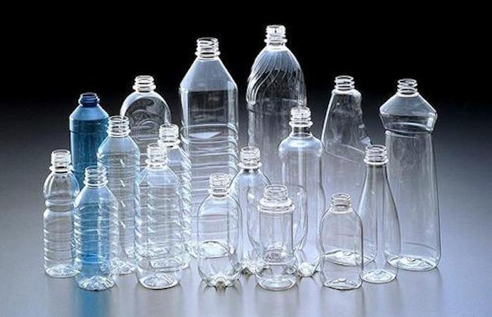
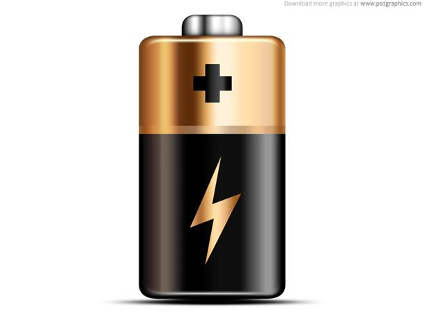
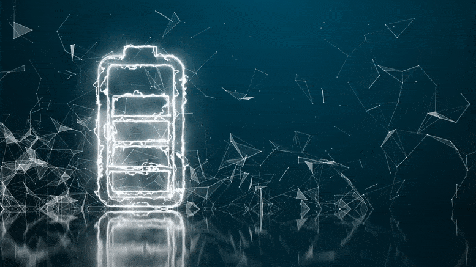

Que son los envases PET?
Los envases de plastico (PET) son un tipo de plastico comunmente utilizado en envases y botellas
de gaseosa, agua y aceite, entre otros. Ademas de ser 100% reciclable, sus aplicaciones varian
desde la fabricacion de mas envases hasta la produccion de abrigos de polar.
Cuales son sus propiedades?
Un material de gran dureza y rigidez, que puede utilizarse en contacto con alimentos debido
a sus características de no toxicidad
Una gran transparencia, aunque admite también distintas cargas de colorantes
Este tipo de material plástico o acrílico adquiere una muy buena resistencia química. Por lo
que, puede entrar en contacto con diferentes disolventes y aceites sin estropearse
Además, obtiene una amplia resistencia al desgaste, a los impactos y a la rotura
Se convierte en un producto ignífugo, es decir, que rechaza la combustión y se protege
contra el fuego
Es, gracias a su composición, un plástico totalmente reciclable y respetuosos con el medio
ambiente

PILAS
Que es una pila?
Una pila electrica es el formato industrializado y comercial de la celda galvanica o voltaica. Es un
dispositivo que convierte energia quimica en energia electrica por un proceso quimico transitorio,
tras lo cual cesa su actividad y han de renovarse sus elementos constituyentes, puesto que sus
caracteristicas resultan alteradas durante el mismo. Se trata de un generador primario (no
recargable) o secundario (recargable). Esta energia resulta accesible mediante dos terminales que
tiene la pila, llamados polos, electrodos o bornes. Uno de ellos es el polo positivo o catodo y el
otro es el polo negativo o anodo.
Aqui te dejamos como reciclar las pilas:
Pues las pilas llevan un proceso un poco mas complicado de reciclaje por lo que la recomendaciom es esta:
las pilas que no sean recargables cuando ya no te sirvan guardalas tosas juntas en un bote y cuando llegues
a un numero de pilas las llevas a algun lugar especializado. sin embargo nosotros te recomendamos utilizar
las pilas que son recargables así te pueden durar mucho tiempo más.

Bateria
Que es una bateria?
Una batería eléctrica, acumulador eléctrico o simplemente batería o acumulador, es un dispositivo
que consiste en dos o más celdas electroquímicas que pueden convertir la energía química
almacenada en corriente eléctrica. Todos los tipos de baterías contienen un electrodo positivo y
uno negativo sumergidos en un electrolito, y el conjunto completo se encuentra dentro de un
recipiente.
Existen distintos tipos de baterias, por ejemplo, las de carros o motos, las de celulares,
de litio entre otro monton de tipos de bateria, por lo que hay distintas maneras de reciclarlas.
